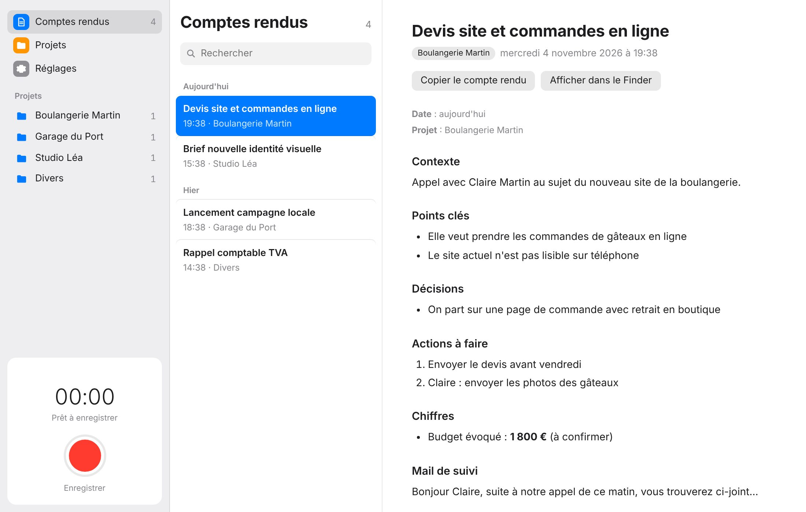

Essaie le classement
Devis site boulangerie
Action : envoyer le devis avant vendredi
Exemple avec trois projets inventés : tape ce qui se dit dans un appel, et regarde où MiroRecap le range. Dans l'app, c'est Claude qui lit tout l'appel et choisit parmi tes projets.
Zéro prise de notes
D'abord, tu enregistres : bouton rouge sur le Mac, ou Dictaphone sur l'iPhone.
Ensuite, Whisper transcrit l'audio sur ton Mac.
Puis Claude rédige le compte rendu.
Enfin, il est rangé dans le bon projet.
Le résultat
Chaque appel donne un compte rendu prêt à relire : le contexte, les points clés, les décisions, qui fait quoi et pour quand, les chiffres évoqués et un mail de suivi déjà rédigé.
La transcription complète reste en bas, avec l'heure de chaque phrase. Un bouton copie le compte rendu pour le coller où tu veux.


Whisper transcrit directement sur ton Mac, sans internet. Seul le texte part chez Claude pour rédiger le compte rendu.
L'audio reste chez toi
Crée tes projets (clients, sujets) avec une phrase de description, et Claude range chaque appel au bon endroit. Si rien ne colle, il va dans Divers.
Rangé tout seul
Enregistre un appel ou un mémo sur ton iPhone et dépose-le dans iCloud Drive : ton Mac s'en occupe. Tu relis ensuite le compte rendu dans l'app Fichiers.
Ton iPhone aussi
Avec Claude Pro ou Max, un clic et c'est connecté : pas de clé API ni de facture en plus. Sans abonnement, une clé API marche aussi.
Ton compte Claude
Tes questions
Il me faut quel Mac ?
Un Mac avec puce Apple (M1, M2, M3, M4…) sous macOS 13.5 ou plus récent. Les Mac Intel ne sont pas compatibles, car la transcription utilise la puce Apple.
Comment je l'installe ?
- Télécharge MiroRecap.dmg et ouvre-le.
- Glisse MiroRecap dans le dossier Applications.
- Ouvre l'app. La première fois, macOS la bloque : va dans Réglages Système → Confidentialité et sécurité, puis clique sur « Ouvrir quand même ».
- Dans les Réglages de MiroRecap, clique sur « Se connecter » pour lier ton abonnement Claude.
Pourquoi macOS bloque l'app la première fois ?
MiroRecap est une app gratuite faite par un indépendant, sans signature payante d'Apple. macOS demande donc ta confirmation une seule fois. Le code est public sur GitHub, chacun peut voir ce qu'elle fait.
C'est vraiment gratuit ?
L'app est gratuite. Pour les comptes rendus, il te faut un abonnement Claude Pro ou Max (MiroRecap l'utilise, sans frais en plus), ou une clé API Anthropic, facturée à l'usage.
Mes enregistrements partent-ils sur internet ?
L'audio reste sur ton Mac : la transcription se fait en local. Seul le texte transcrit est envoyé à Claude pour rédiger le compte rendu. Tes fichiers sont rangés dans ton dossier iCloud Drive, ou sur ton Mac si tu préfères.
J'ai le droit d'enregistrer un appel ?
En France, enregistrer quelqu'un à son insu est interdit. Préviens toujours ton interlocuteur avant de lancer l'enregistrement. Les appels enregistrés avec l'iPhone le font automatiquement.
Range tes
appels
Gratuit, pour Mac avec puce Apple. Ouvre le fichier, glisse MiroRecap dans Applications, et ton prochain appel aura son compte rendu.MiroRecap.dmg · 221 Mo · macOS 13.5 ou plus récent
Télécharger pour Mac